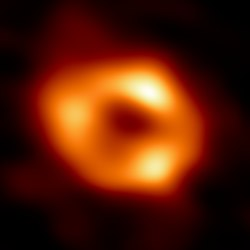

Sagittarius A*
Săgetătorul A*, abreviat ca Sgr A*, este gaura neagră supermasivă din Centrul Galactic al Căii Lactee. Privită de pe Pământ, este situată în apropierea graniței constelațiilor Săgetător și Scorpion, la aproximativ 5,6° sud de ecliptică, vizual aproape de Roiul Fluturilor (M6) și Lambda Scorpionului. Săgetătorul A* este o sursă radio astronomică luminoasă și foarte compactă.